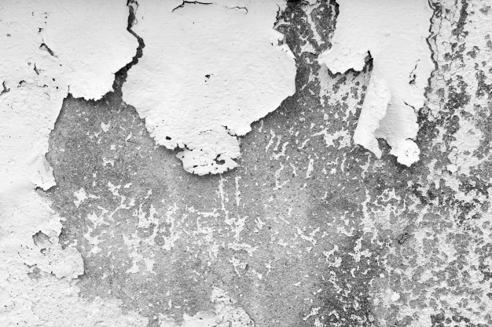

Про плісняву вдома
Що ж взагалі таке ця пліснява?
Пліснява це мікроскопічні гриби, або ж мікроміцети. Це надзвичайно різноманітна група мікробів і охоплює вона далеко не лише плями на стінах.
Серед мікроміцетів є багато важливих видів плісняви, що викорисовуються промислово: продуценти антибіотиків (пеніцилін, цефалоспорин, тощо), продуценти органічних кислот, ферментів, стартерні культури для виробництва сирів із пліснявою та спеціальний вид грибка (Botrytis cinerea), який зумовлює неповторний смак токайського вина. Препарати на основі грибів роду триходерма використовують як біологічний захист рослин від деяких фітопатогенних грибів.
Мікроміцети – потужні учасники біодеградації та грунтоутворення. Вони беруть участь у розкладанні і полімерних матеріалів (наприклад, гуми із автомобільних покришок) та різноманітних будівельних матеріалів (бетону, штукатурки, гіпсокартону, шпалер, фарб і т. д.).
Існують також і збудники різноманітних мікозів, у тому числі грибкових уражень нігтів та шкіри. І, звичайно, що нас усіх лякає та стає предметом для численних міфів – продуценти мікотоксинів, про що згадаємо трохи далі.
Чому цвітуть стіни?
Насправді у плісняви немає підступних планів по захопленню вашого житла. Однак коли вологість підвищується, спори плісняви, що постійно мирно літають у повітрі та у більшій чи меншій кількості присутні на всіх поверхнях, починають проростати. Все просто, як "просто додай води".
Чи може бути пліснява на стіні бути небезпечною?
Корисною – точно ні. Присутність плісняви у приміщенні призводить до збільшення кількості її спор у повітрі. А це, у свою чергу є фактором забруднення повітря та несе навантаження на дихальну систему.
Можуть з'являтися респіраторні симптоми, організм намагається у будь-який спосіб позбавитися сторонніх часток – за допомогою виділення слизу, кашлю, чхання.
При тривалому сусідстві із пліснявою, грибні метаболіти можуть призводити до виникненняалергій та виступати тригером для розвитку астми.
Більш вразливими можуть бути маленькі діти, люди похилого віку, із імуносупресією та з бронхіальною астмою. У випадку алергії на антибіотики можливе загострення алергічних проявів, якщо на стіні росте вид гриба, який ці антибіотики вміє продукувати.
На фоні серйозного зниження імунітету і високої концентрації спор плісняви, може навіть виникати мікоз легень.
Чи страшна чорна пліснява?
Популярною є думка, що наче б то пліснява чорного кольору може бути небезпечніша за плісняву інших кольорів. Можливо така точка зору виникла через чорний колір одного із не надто дружніх до нас пліснявих грибів роду Stachybotrys, з яким пов‘язують гострі ураження легень у немовлят.
Однак міцелій не лише цього гриба може мати чорне забарвлення, це можуть бути й інші види грибів, на око їх важко відрізнити. А чимало грибів, що не мають чорного забарвлення, також можуть бути небезпечними, наприклад аспергіли, які відомі як найпоширеніші збудники легеневих мікозів, хетоміум, що іноді може бути збудником оніхомікозів та ін.
Окрім того, чорне забарвлення грибів обумовлюється присутністю в них пігменту меланіну (ну майже, як в нас) і кількість цього пігменту може зростати, коли гриб піддається дії оксидативного стресу. Тому не дивуйтеся, якщо, наприклад, після застосування відбілюючого засобу на стіні почала знову рости пліснява, але вже не зелена, а чорна.
Як позбутися плісняви?
Ключовим прийомом у боротьбі із пліснявою є контроль вологості. Її бажано підтримувати у межах 40-60%. Якщо вологість занизька, страждають слизові оболонки носа, очей та шкіра, а якщо вища, то пліснява не забариться.
Це частіше трапляється на перших поверхах будівель чи внаслідок аварійних ситуацій, коли, наприклад, десь протікає водопровід.
Важливою є належна вентиляція та утеплення фасадів, аби на холодних стінах не утворювався конденсат. Потрібно пам'ятати, що джерелом поширення плісняви можуть бути кондиціонерита зволожувачі повітря. На їх фільтрах нерідко виростають цілі колонії грибів, тому слід вчасно їх змінювати. Грунт у горщиках із рослинами також є потенційним джерелом спор плісняви. Тому потрібно слідкувати за станом грунту у горщиках, при появі неприємного запаху пересадити, використовувати дренаж, очищувати листки рослин від пилу та не забувати провітрювати приміщення.
Популярною будівельною помилкою, яка приводить в дім плісняву, є використання гіпсокартонних матеріалів у місцях, де може мати місце підвищена вологість. Гіпсокартон дуже нестійкий до вологості, погано просихає та проростає пліснявою наскрізь. У такому випадку врятує лише демонтаж таких стін.
На сьогодні існують будівельні матеріали із фунгіцидними компонентами – грунтовки, фарби, тощо. Тому у місцях, де може мати місце підвищена вологість, їх варто використовувати.
Потрібно слідкувати, щоб ніде не застоювалася вода (наприклад, у ванній кімнаті), завжди ретельно просушувати речі перед тим, як складати в шафу, вчасно розвішувати речі сушитися , не забувати їх у пральній машині, ретельно просушувати спортивний інвентар, кухонні рушники, тощо.
Якщо ж пліснява вже з'явилася, то окрім контролю вологості, варто як найретельніше очистити місце її появи. Для цього можна скористатися хлорвмісними миючими засобами, а також обробити спеціальними препаратами проти плісняви – фунгіцидами та слідкувати за цим місцем у подальшому. У випадку якщо пліснява з'являється на шпалерах чи гіпсокартоні, то такі матеріали замінюють, а стіну під ними обробляють фунгіцидом. Якщо ж площі ураження пліснявою доволі масштабні, є сенс звернутися за консультацією до фахівців.
Якщо хліб зацвів?
Їсти продукти, уражені пліснявою, не варто, адже ті крапочки, що ми бачимо на поверхні, то лише маленькі частини всього міцелію гриба. Уражена грибом частина зацвілого продукту значно більша. Також якщо зацвіло, наприклад, варення, то потрібно викидати всю банку. Гриби можуть продукувати токсини, що небезпечні при вживанні їх у їжу.
А як же ж сир із пліснявою?
Як ми вже згадували раніше, для промислового виробництва сирів із пліснявою використовують спеціальні промислові всебічно досліджені штами, що не мають генів ні продукції антибіотиків, ні токсинів. Однак варто пам‘ятати про такі ризики споживання м‘яких сирів як підвищена ймовірність лістеріозу та сальмонельозу, а також доволі високий вміст солі та насичених жирів. Варто надавати перевагу сирам, приготованим із пастеризованого молока. Як зрозуміти, що сир із пліснявою вже таки зіпсувався – тут.
Про мікотоксини та зомбі
Чимало грибів справді продукують токсини. І якщо вони при цьому пригнічують ріст бактерій, то ми толерантно називаємо їх антибіотиками. Просто подивившись на свою стіну, визначити чи продукує ваша пліснява токсини – практично неможливо.
Автори також стверджуть, що саме вдихання повітря у приміщенні із пліснявою не може викликати так звану <<мікоінтоксикацію>>, адже концентрація токсинів при цьому занизька.
У більшості випадків інтоксикація може виникати при споживанні у їжу зіпсованих продуктів. Переважно дія мікотоксинів проявляється загальним нездужанням та слабкістю і не проявляється якимось надто специфічним впливом на мозок людини.
Зустрічаються, звичайно, і такі відомі мікотоксини як афлактоксин, який можуть утворювати аспергіли у зерні при надмірній його вологості, або ерготамін, що має також і психотичну дію, отруєння ними були поширені переважно у минулих століттях при вживанні зіпсованого зерна. Наразі такі спалахи трапляються доволі рідко, одне із них було у Кенії в 2004.
У "страшних" фільмах про плісняву обов'язково звучить історія про мурашок-зомбі, під впливом яких бідолахи залазять на листочки, чіпляються щелепами за його край і так і помирають, поки в них із голови не виросте грибна гіфа. Виглядає справді моторошно і може виникати думка, наче б то гриби настільки підступні, що можуть перетворити нас також на зомбі. Однак потрібно розуміти, що цей приклад паразитичної взаємодії є дуже специфічним і "заточений" лише під мурашку певного виду.
Справедливо згадати, що не лише кордицепс може таке робити з мурашками. До прикладу, існує така хвороба як дикроцеліоз, збудником якої є плоский черв, що паразитує переважно у травоїдних тварин, однак зустрічається іноді і в людей. Проміжні господарі – равлики та мурашки. Заражені личинкою цього черва мурашки поводяться десь таким самим чином, як і заражені кордицепсом: залазять на травинку, чіпляються щелепами і чекають, поки їх там не з'їсть якась овечка. Тому цілком можливо, що існує якась "кнопочка" у нервовій системі мурашок, що може змушувати їх так поводитися.

Photo by @formatoriginal on freepik